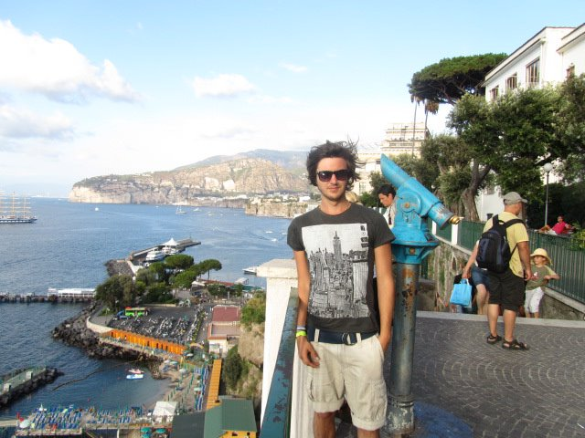
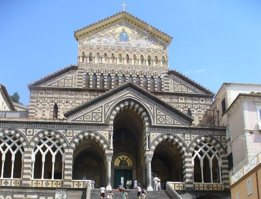
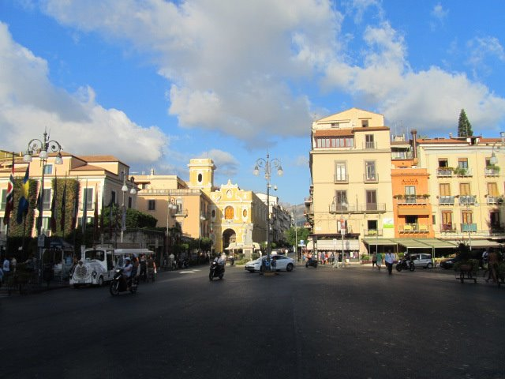
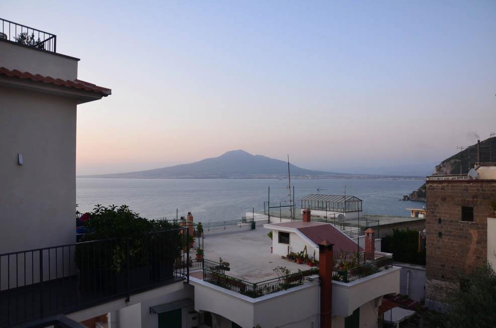
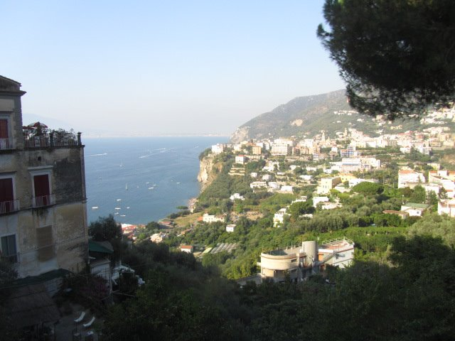
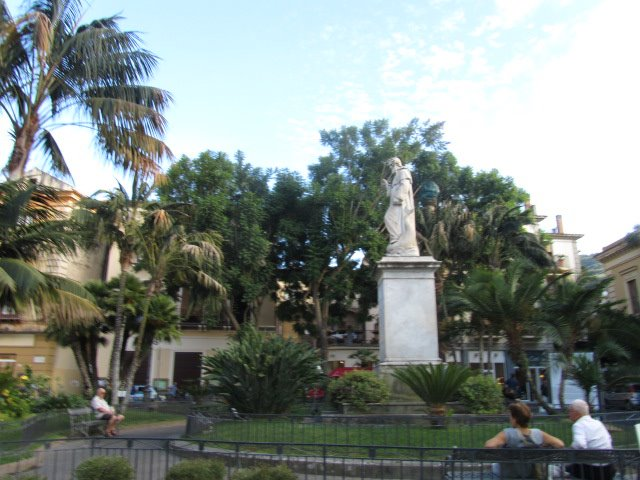

Introduction
The Amalfi Coast, nestled in Italy’s Campania region, captivates with its rugged cliffs, quaint villages, and deep blue Mediterranean waters. This iconic stretch of coastline is a haven for travelers seeking both relaxation and adventure—a place where every corner reveals art, history, and a touch of magic.
History
Once a formidable maritime republic, the Amalfi Coast was a center of trade, art, and innovation during the Middle Ages. Its ancient streets and palaces whisper tales of a bygone era—a time when merchants, sailors, and adventurers shaped a vibrant cultural tapestry that still resonates today.
Carl's Amalfi Coast Adventure
My first encounter with the Amalfi Coast was nothing short of transformative. Back in the summer of 2011, I celebrated my mum’s 60th birthday with a family getaway to Vico Equense—a charming town that felt like a secret gem just off the beaten path. Wandering narrow cobblestone streets, I found myself enchanted by the interplay of sun, sea, and history.
I still remember an unexpected twist during that trip: while savoring a meal at our little hotel, I discovered what might be the best sushi I’ve ever tasted—an ironic delight amid classic Italian fare! Run by a warm-hearted, wise Italian lady, the experience reminded me that travel is full of surprises, and sometimes, the most memorable moments are the ones you never plan.
Years later, I returned in February 2015 to find a quieter, more introspective Amalfi. The bustling summer energy had given way to a gentle calm, allowing me to truly appreciate the timeless beauty and rich cultural undercurrents of the coast.
How to Get There
Thanks to its excellent transportation links, reaching the Amalfi Coast is easier than you might think. Here are your options:
- By Air: Fly into Naples International Airport (Capodichino), then take the Circumvesuviana train to Sorrento, followed by a bus or ferry to your destination.
- By Train: Travel to Naples Central Station from major cities like Rome or Florence, and then catch a local train or bus to Sorrento.
- By Car: Rent a car for the freedom to explore at your own pace. The scenic drive from Naples takes roughly 1.5 hours.
- By Bus or Ferry: Several companies operate routes connecting Naples to Positano, Amalfi, and Ravello, offering scenic views along the way.
Top Attractions in the Amalfi Coast
1. Positano
Positano’s cascading, colorful buildings and winding streets make it a picture-perfect destination. Stroll through its charming lanes, relax on Spiaggia Grande, or hop on a boat to explore hidden sea caves.
2. Amalfi
The town of Amalfi brims with history. Visit the stunning Amalfi Cathedral, wander its ancient piazzas, and explore local museums that celebrate its seafaring past and artisanal traditions.
3. Ravello
Famous for its panoramic vistas, Ravello offers a serene escape with its exquisite villas and lush gardens. Don’t miss Villa Rufolo and Villa Cimbrone for their artistic charm and legendary views.
4. Path of the Gods (Il Sentiero degli Dei)
This breathtaking hiking trail winds along ancient paths above terraced vineyards and cliffs. It’s a must for adventurers seeking awe-inspiring vistas and a touch of local history.
5. Grotta dello Smeraldo (Emerald Grotto)
Step into a world of ethereal beauty as you enter this sea cave, where sunlight transforms the water into a shimmering emerald spectacle. Accessible by boat, it’s a magical experience.
6. Marina Grande
Amalfi’s main port, Marina Grande, is a bustling hub of local life. Enjoy fresh seafood at seaside eateries or set off on a boat tour to discover hidden coves and coastal treasures.
Tips and Recommendations
Do’s and Don’ts
- Do: Wear sturdy shoes for cobblestone streets and steep pathways.
- Don’t: Skip a boat tour—seeing the coast from the sea is a game changer.
- Do: Savor the local specialties: fresh seafood, limoncello, and delectable pastries.
- Don’t: Disturb the serene environment; keep the coast pristine.
- Do: Learn a few Italian phrases to connect with locals on a deeper level.
Packing List
- Comfortable walking shoes and layered clothing.
- Sun protection, including a hat and sunscreen.
- A reusable water bottle and backpack for daily essentials.
- Portable charger and a small guidebook or map.
- Basic Italian phrases to enhance your local interactions.
Costs
- Entry Fees: Major attractions generally charge between €10-15.
- Transportation: A 24-hour public transport ticket is around €7.
- Food: Expect to spend €15-40 per person on a meal in local trattorias.
- Accommodation: From budget options at €60/night to luxury stays over €300/night.
Currency and Money Matters
Italy uses the Euro (€). While most larger establishments accept credit cards, having some cash on hand is essential for local vendors and small eateries.
Currency Exchange & ATMs
Exchange services and ATMs are plentiful—just be sure to notify your bank of your travel plans to avoid any hiccups.
Tipping
Tipping is appreciated though not mandatory. A 5-10% tip in restaurants or simply rounding up your bill in casual spots is customary.
Practical Information
Best Time to Visit
Late spring (May-June) and early autumn (September-October) are ideal, offering warm weather, fewer crowds, and a burst of natural beauty.
Getting Around
Whether by bus, train, car, or ferry, the Amalfi Coast’s transportation network makes it easy to explore at your own pace. Public transport options are efficient and affordable.
Language & Safety
While Italian is the official language, English is common in tourist areas. Standard travel precautions apply—stay aware of your surroundings and protect your belongings in crowded spots.
Cultural Immersion
Dive into the local culture by visiting historic palaces, vibrant markets, and attending seasonal festivals. Whether it’s exploring ancient churches or sampling street food, every experience adds to the rich tapestry of the Amalfi Coast.
Food and Cuisine
The culinary scene here is a blend of traditional Italian flavors and innovative twists. Don’t miss out on:
- Seafood Risotto: A creamy, fresh seafood delight.
- Limoncello: Refreshing and zesty—perfect as a digestif.
- Scialatielli ai Frutti di Mare: Hearty pasta enriched with local seafood.
- Fritto Misto: A mixed platter of lightly fried seafood.
- Delizia al Limone: A dessert that perfectly captures the region’s citrus charm.
- Local Wines: Savor Falanghina or Fiano at a local enoteca.
- Cooking Classes: Learn the secrets behind traditional Amalfi dishes.
Every meal here tells a story—one that I discovered over lazy afternoons and lively evenings in seaside cafes.
Adventure and Activities
The Amalfi Coast is as much about action as it is about relaxation. Options include:
- Boat Tours: Enjoy the coastal views from the water.
- Hiking: Trek the famous Path of the Gods for unforgettable panoramas.
- Segway and Bike Tours: A fun way to navigate the picturesque towns.
- Horseback Riding: Experience the lush landscapes from a new perspective.
- Water Sports: Try snorkeling or jet-skiing along the Mediterranean.
Whether you're an adrenaline junkie or a leisurely explorer, the activities here offer something for everyone.
About the Amalfi Coast
The Amalfi Coast is a symphony of natural beauty, history, and modern-day allure. Its dramatic cliffs, terraced vineyards, and colorful villages create an enchanting backdrop for an unforgettable escape. From the old-world charm of ancient maritime republics to the vibrant pulse of today’s cultural festivals, every visit reveals a new layer of its enduring magic.